You open a new tab dozens of times a day and never chose what's on it. Open Slate replaces it with a speed dial and dashboard: tiles, widgets and a wallpaper engine, with close to everything about the look under your control.
Free and MIT licensed. No account, no sign-in, no telemetry.
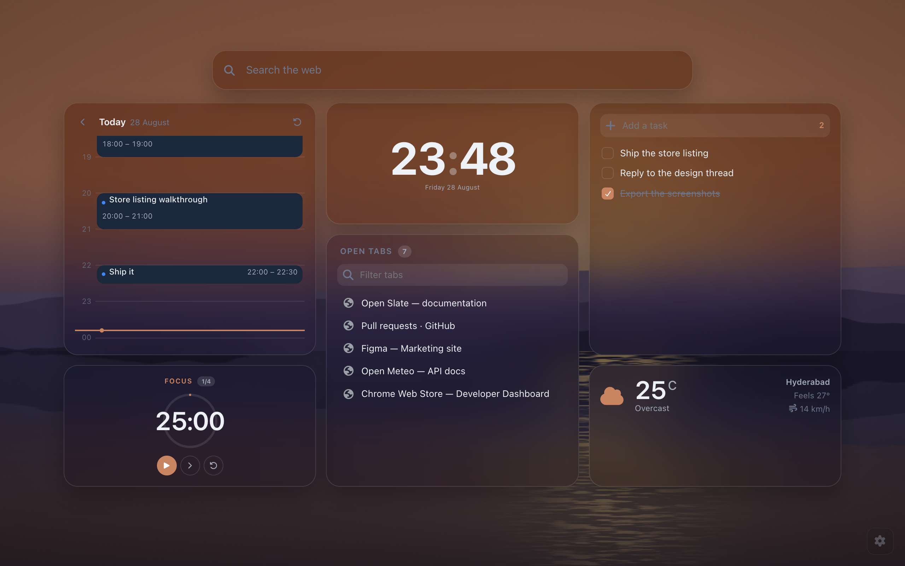
Most new tab replacements give you a photo and a clock. Open Slate gives you the page you'd have built yourself, if you had the time.
Logos come from a bundled Simple Icons dataset with the brand's own colour. Every other site gets its favicon rendered large on a plate tinted by sampling that favicon, so the grid stays coherent even for sites nobody has a logo for.
Alt+1–9 opens by position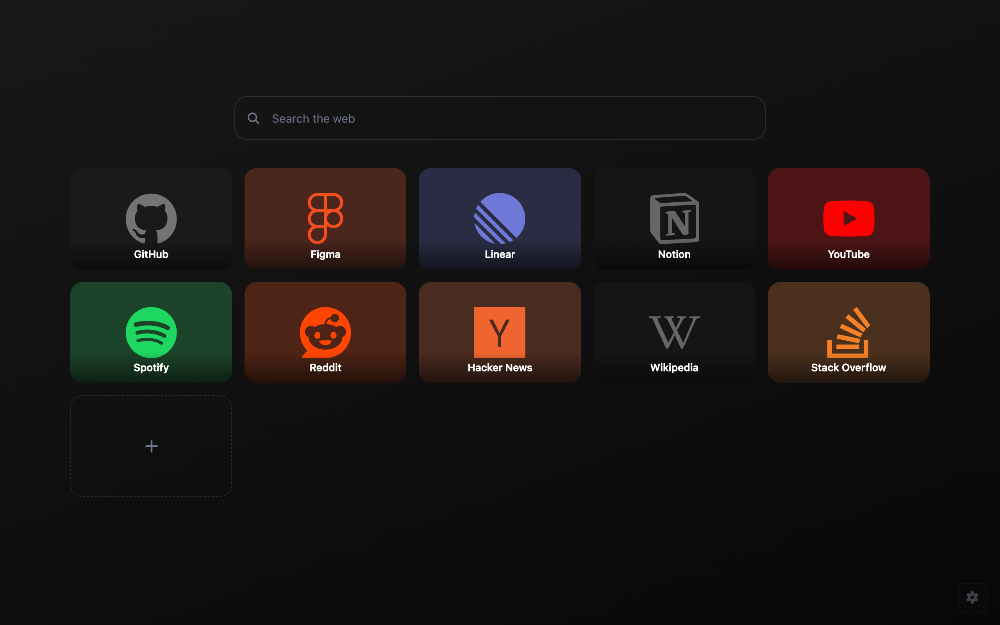
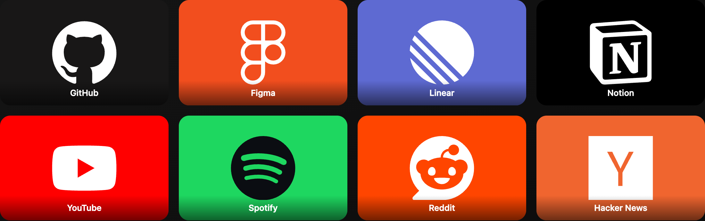
Brand: the plate takes the site's colour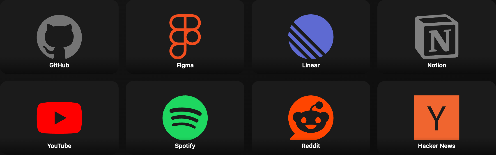
Neutral: the theme surface, coloured logo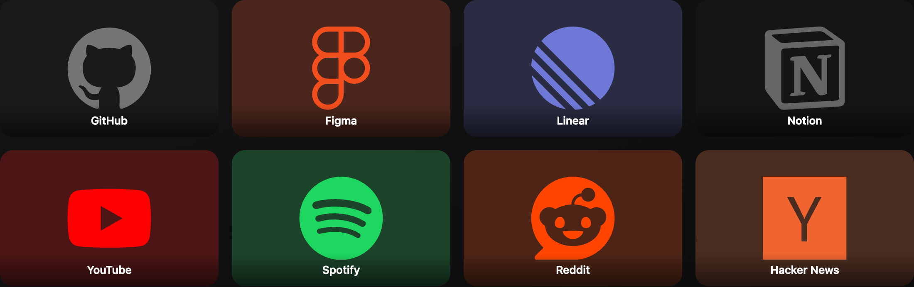
Tinted: a wash of the brand colour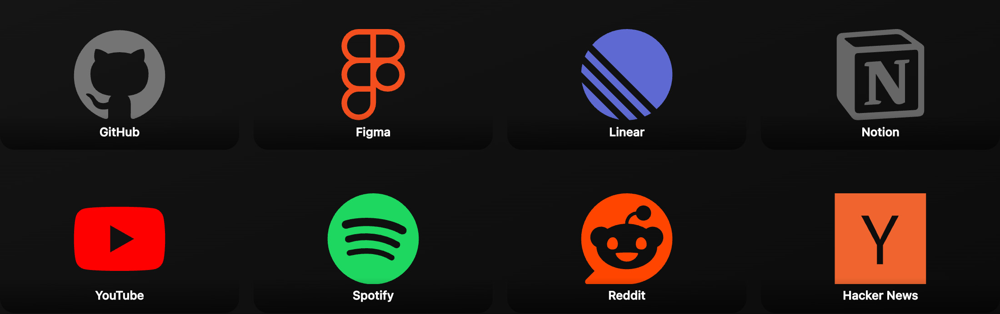
Transparent: no plate at all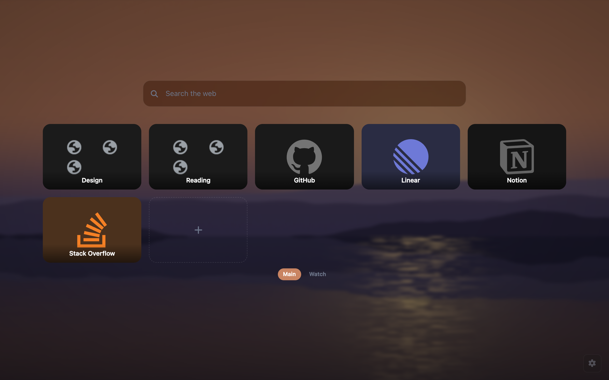
A grid of square cells with five standard sizes that widgets snap to, the way phone widgets do. Growing or dropping one moves whatever was in the way, at every window size, not just the one you're looking at.
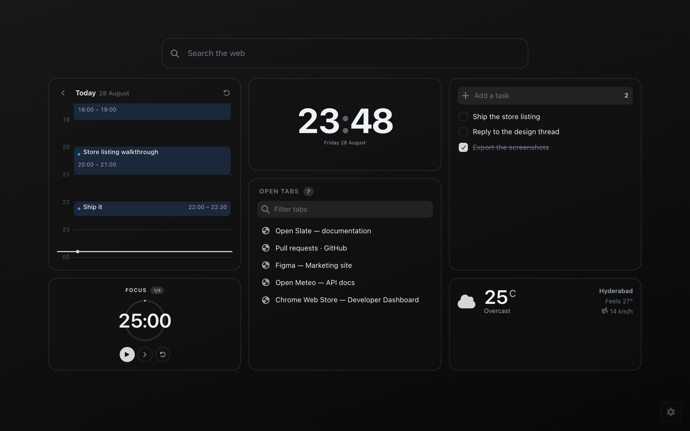
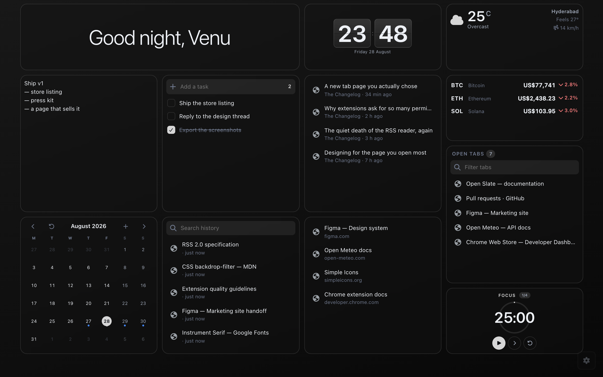
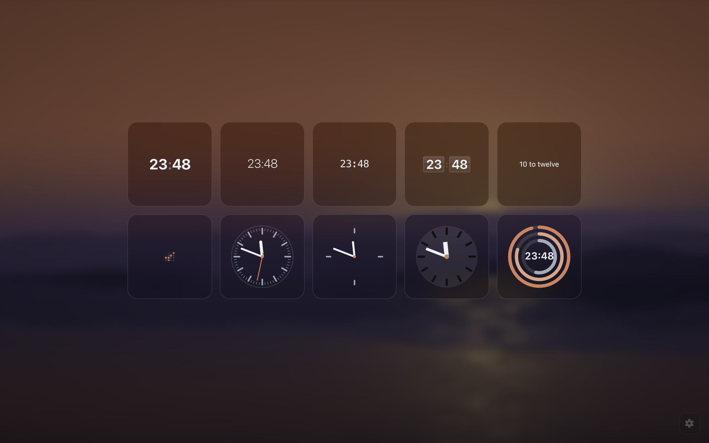
Cmd/Ctrl+K searches your tabs,
tiles, bookmarks, history and every settings command at once, with a web
search as the fallback. The search box itself takes bang shortcuts
(!yt cats), detects addresses, and does arithmetic inline.
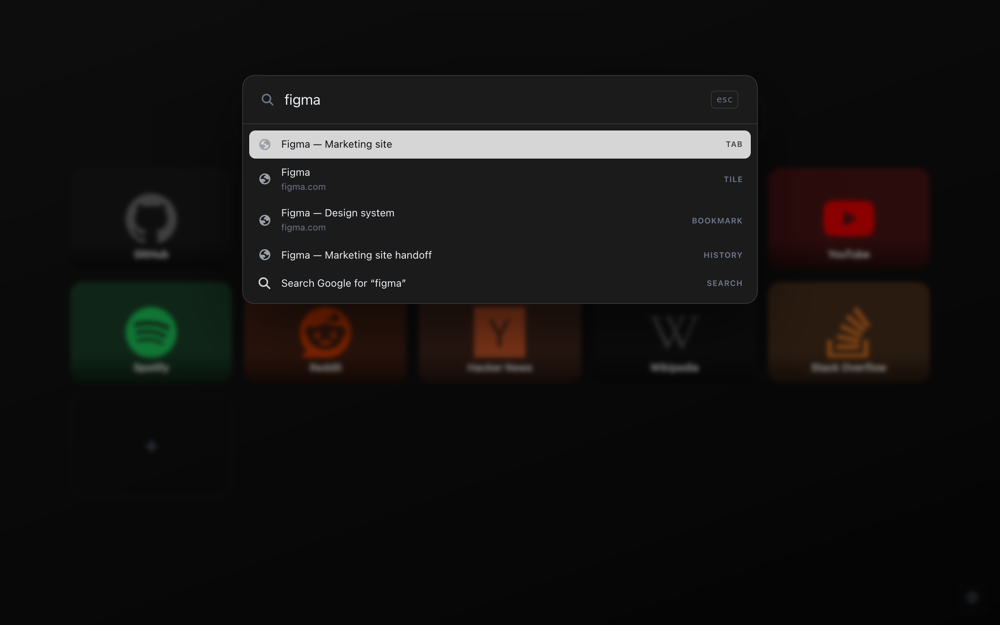
Eight palettes, automatic light and dark, a corner radius that runs from fully round to fully square, four surface styles, and an accent that can be sampled from your wallpaper. Every preference is searchable, and updates live across every open tab.
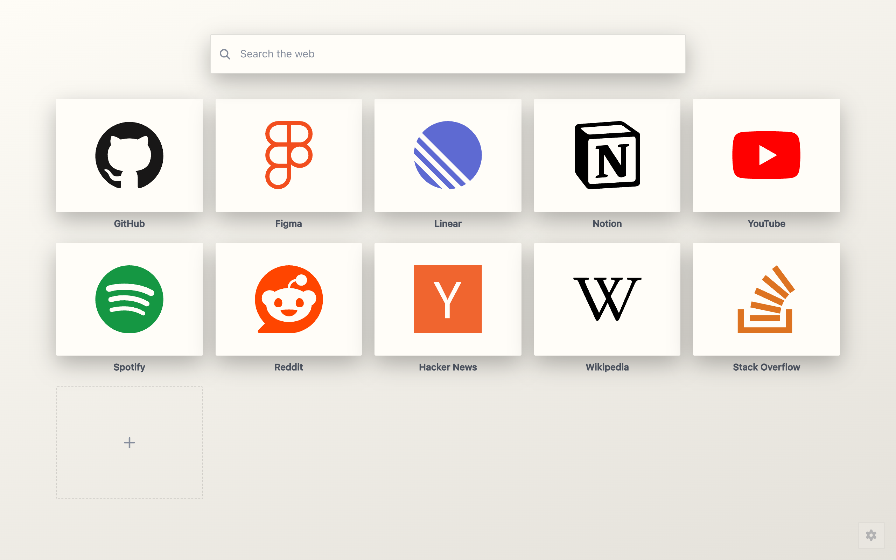
This is the page above with a different palette, a corner radius of two pixels, solid surfaces instead of glass and labels moved below the plate. Nothing was rebuilt; those are four switches in settings.
Every preference is declared once and the interface renders itself from that declaration, so there's no settings screen that quietly lags behind what the extension can actually do.
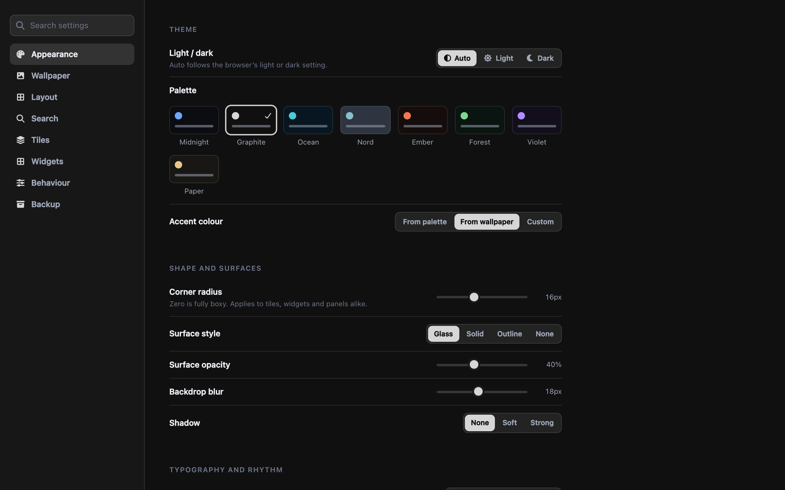
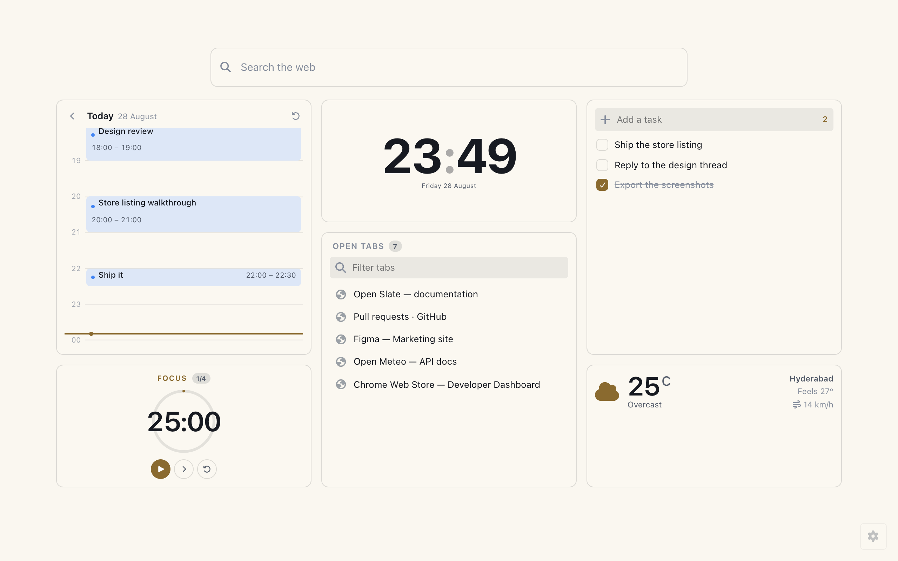
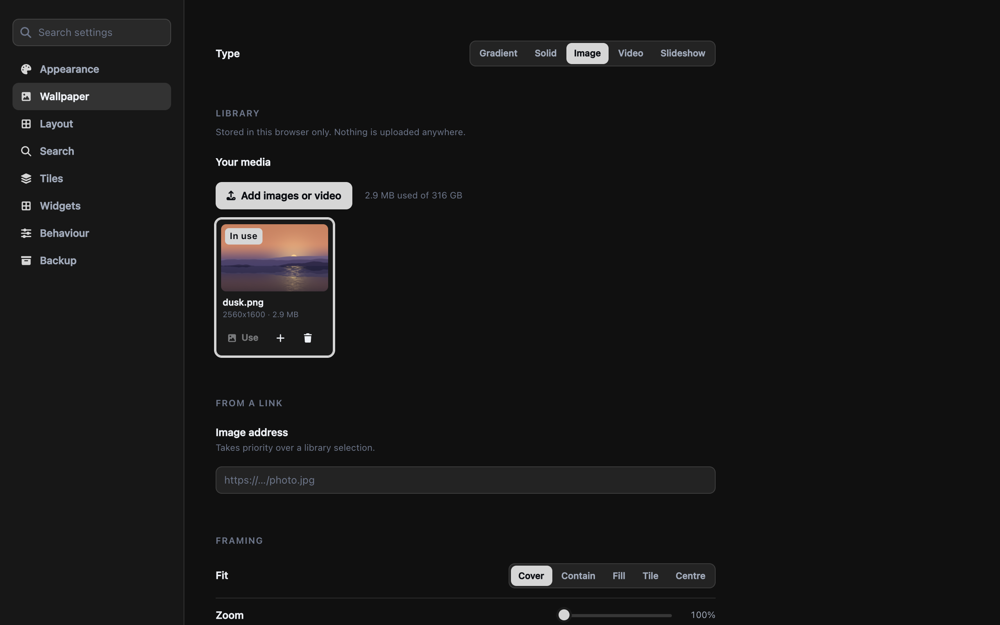
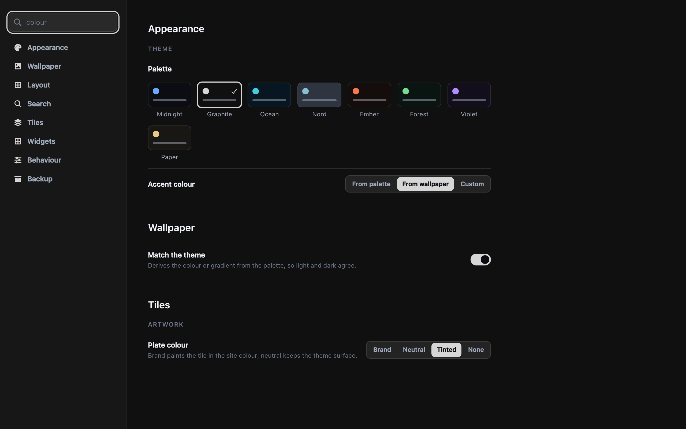
colour reaches into Appearance, Wallpaper
and Tiles at once, rather than making you guess which screen it was on.
A new tab page sees every tab you open. That is exactly why this one collects nothing, and why most of what it can do stays switched off until you ask for it.
No telemetry, no crash reporting, no identifiers. Nothing is collected, transmitted or sold.
The extension runs on its own page and nowhere else. It cannot read the sites you visit, because it never runs on them.
It installs with four. Tabs, history, bookmarks, downloads and sessions are requested the moment you add the widget that needs one, and declining leaves the rest working.
Settings and tiles live in local storage; wallpapers in IndexedDB. Nothing is uploaded, and sync is off unless you turn it on, per device.
Geolocation is never declared and never called. The weather widget places itself from a city-level lookup, or you type a town.
Weather, a one-off city lookup, coin prices and the feeds you added. Each behind a widget you chose and a permission you granted. None carries an identifier.
Every claim on this page is checkable, because the whole extension is public under the MIT licence. Read the network calls, audit the permissions, then build the exact thing you just installed.
No minified blob to trust. The source that runs in your browser is the source in the repository, and the manifest lists every permission it asks for.
MIT licensed, so you can change anything, ship your own build, or keep a private fork with the two widgets you actually use.
No account, no server, no subscription that lapses. Even if this project stopped tomorrow, your copy keeps working and anyone can pick it up.
Chrome doesn't expose an installed theme's colours to extensions, only whether you're in light or dark mode. So "match Chrome" is automatic light/dark, eight palettes, and an accent sampled from your wallpaper. Close, but not the same thing, and worth saying plainly.
Chrome refuses to make geolocation optional, and one widget isn't worth a location warning on every install. Weather is placed from an approximate, city-level lookup, accurate enough for a forecast and correctable by typing a town.
A search box, one clock, and a grid seeded from your most-visited sites, with nothing to configure before it's useful. Everything else is opt-in: you add widgets you want, and the permissions come with them.
The page is a static bundle loaded from disk with no remote code and no blocking network calls on open. Widgets that fetch (weather, feeds, coin prices) render from a local cache first and refresh behind it.
RSS feeds live at addresses only you know, so there's no fixed list to declare. The broad pattern is declared as optional and never requested wholesale: adding a feed asks for that one origin by name. A fresh install holds no host permissions at all, and if you never add a feed you never grant one.
Export the whole configuration to a file and import it anywhere, or turn on sync per device. There are also theme codes, which carry the look without carrying your tiles, notes or tasks, so you can share an appearance without sharing anything personal.
It goes with the extension. Everything lives in Chrome's local storage for this extension and in IndexedDB. There is no server holding a copy, because there is no server. Export first if you want to keep it.
Free, MIT licensed, and it works the moment it installs.